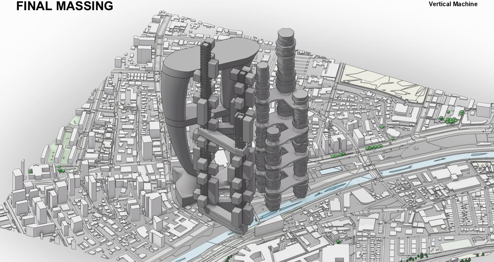
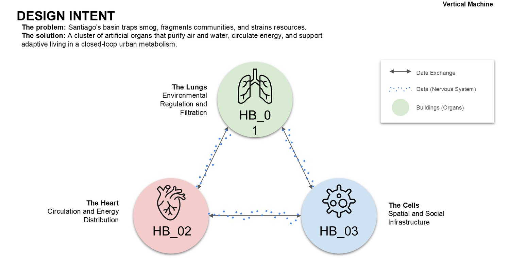
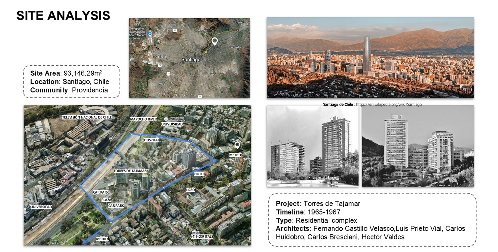
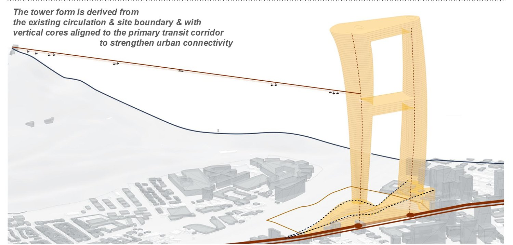
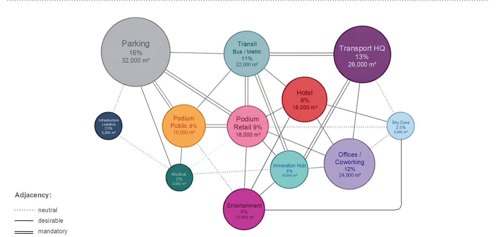
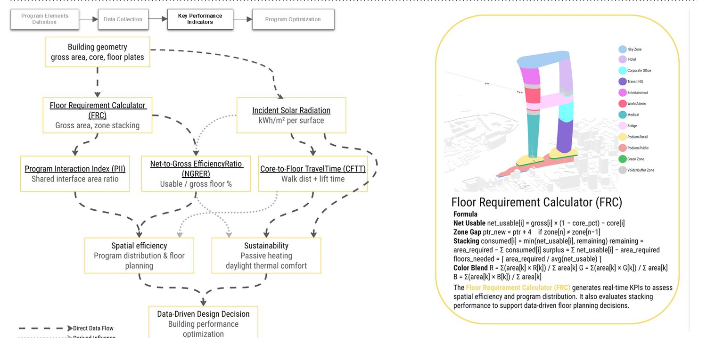
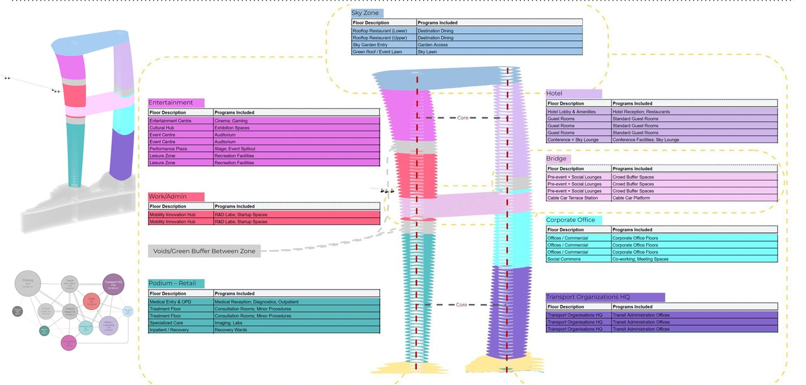
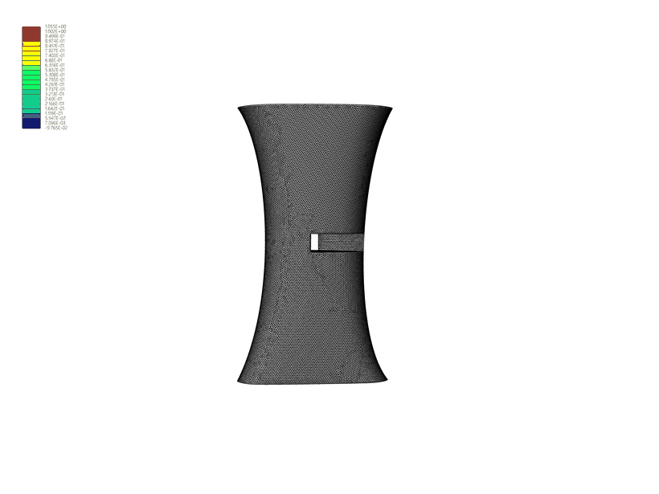
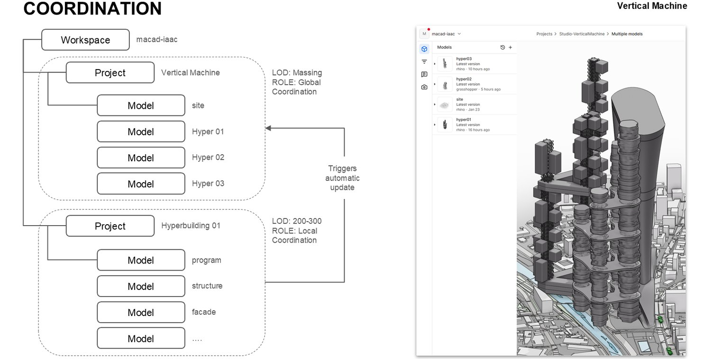

Hyperbuilding 02, The Heart
Program & KPIs · Vertical Machine · BIMSC StudioVertical Machine is a cluster of three hyperbuildings for Santiago, conceived as a closed-loop urban body: the Lungs (HB01) filter air and water, the Heart (HB02) moves people and energy, and the Cells (HB03) hold daily life, all linked by a shared data nervous system. This page is Hyperbuilding 02, The Heart, a program-integrated transit hub, where I worked on the Program team, responsible for program definition and KPI-driven design.
-
Program definitionmobility and data turned into zoning
-
KPI-driven designevery move argued with numbers
-
Transit hub153,000 daily travellers, eight modes
Program team: Nihan Malkoç · Sushmitha Ravi · Marina Osmolovska · Studio: BIMSC26, with the Data and Structure & Facade teams · Faculty: Pablo Antuña Molina · Cristóbal Burgos Sanhueza · Hari Krishnan

Design Intent & Site
The problem is metabolic, so the solution is too: three artificial organs purify air and water, circulate energy and support adaptive living, connected by a shared data system so the cluster behaves as one living body. The Heart sits on a 93,146 m² plot in Providencia, Santiago, next to the iconic Torres de Tajamar and wrapped by metro, hospitals, universities and the Mapocho river, a district shaped by a century of Chilean high-rise and earthquake engineering.


Why the Heart
The Heart is a program-integrated transit hub concentrating 153,000 daily travellers across eight transit modes. Its massing is derived directly from the existing circulation and the site boundary, with vertical cores aligned to the primary transit corridor. Just as a heart pumps blood, the building pumps people, energy and data to the lungs and cells of the cluster.

Three Teams, One Model
The Heart was developed by three teams on one shared model. The Data team set the KPI framework and the pipeline that keeps every metric live; the Program team (mine) turned mobility and data into spatial and zoning logic; and the Structure & Facade team translated that program into an efficient megastructure and a solar-driven facade. Each team defined and designed against its own KPI family.
Program Definition
On the Program team I translated mobility networks and demographic data into spatial and zoning logic, organising circulation, program zoning and adjacencies. Parking, the transit hub, the transport HQ, hotel, retail and co-working stack according to an adjacency matrix that keeps the most connected functions closest, scored as neutral, desirable or mandatory.

The program was built in four data-driven steps:
-
01 · Program elementsfunctions and their areas
-
02 · Data collectionmobility, demographics, climate
-
03 · KPIsmetrics to judge each option
-
04 · Optimizationstack tuned to the numbers
KPI-Driven Design Decisions
Every program decision is argued with numbers rather than intuition. The Program team defined its own KPI family: PII (Program Interaction Index), VMEI (Vertical Mobility Efficiency Index), NGRER (Net-to-Gross Efficiency Ratio), CFTT (Core-to-Floor Travel Time) and a Floor Requirement Calculator (FRC) that sizes each level against spatial efficiency, sustainability and daylight. Alongside, the Data team framed the shared families of CFAR, ERP, MI and MUI, and the Structure & Facade team added SER and LPCI.


From Program to Megastructure
Downstream, the Structure & Facade team pushed the same massing through topology optimization, removing material where it is not needed until an efficient megastructure of slabs, cores and diagrid emerges from the program envelope.

One Federated Model
The whole studio worked on a single federated model in Speckle, global coordination at massing level and local coordination at LOD 200 to 300, so a change by one team propagates to everyone downstream without file requests or rework.
